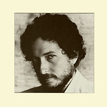

New Morning

Released: October 19, 1970
Length: 35:21
Producer: Bob Johnston
Label: Columbia
Side 1
If Not for You
Day of the Locusts
Time Passes Slowly
Went to See the Gypsy
Winterlude
If Dogs Run Free
Side 2
New Morning
Sign on the Window
One More Weekend
The Man in Me
Three Angels
Father of Night
Home